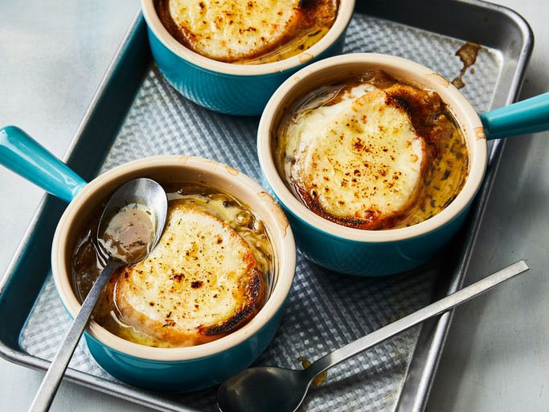

Return to Home
Rich and Simple French Onion Soup

Description:
A delectable soup that goes great with a sandwich and/or salad.
Don't forget to load up on delicious, gooey cheese.
Ingredients:
- 6 large red or yellow onions
- 4 tablespoons extra virgin olive oil
- 2 tablespoons butter
- 1 teaspoon sugar
- Kosher salt (to taste)
- 2 cloves garlic, minced
- 8 cups beef stock, chicken stock, or a combination of the two
- 1/2 cup dry vermouth or dry white wine
- 2 bay leaves
- 1 tablespoon fresh thyme leaves, a few sprigs of frest thyme, OR 1/2 teaspoon dried thyme
- 1/2 teaspoon freshly ground black pepper
- 2 tablespoons brandy (optional)
- 8 slices (1 inch thick) French bread or baguette
- 1-1/2 cups grated Gruyere cheese
- Sprinkling grated Parmesan cheese
Preparation:
- Peel and slice the onions (10 cups in total)
- In a 5 to 6 quart thick-bottomed pot, heat 3 tablespoons of olive oil on medium heat.
Add the onions and toss to coat with the olive oil.
- Cook the onions, stirring often, until they have softened, about 15 to 20 minutes.
- Increase the heat to medium high. Add the remaining tablespoon of olive oil and the butter and cook, stirring often, until the onions start to brown, about 20 to 40 minutes.
The amount of time will vary depending on your pot, stove, and onions.
- Sprinkle with sugar (to help with the caramelization) and 1 teaspoon of salt.
Continue to cook until the onions are well browned, about 10 to 15 more minutes.
- Add the minced garlic and cook for a minute more.
- Deglaze the pot with vermouth or wine
- Add the stock, bay leaves, and thyme.
- Bring to a simmer, cover the pot and lower the heat to maintain a low simmer. Cook for about 30 minutes.
- Season and add the brandy
- Toast the French bread
- Cover soup with bread and cheese and put in oven for 10 minutes at 350.
- Serve
Congratulations! Enjoy your French Onion Soup
Source
Home